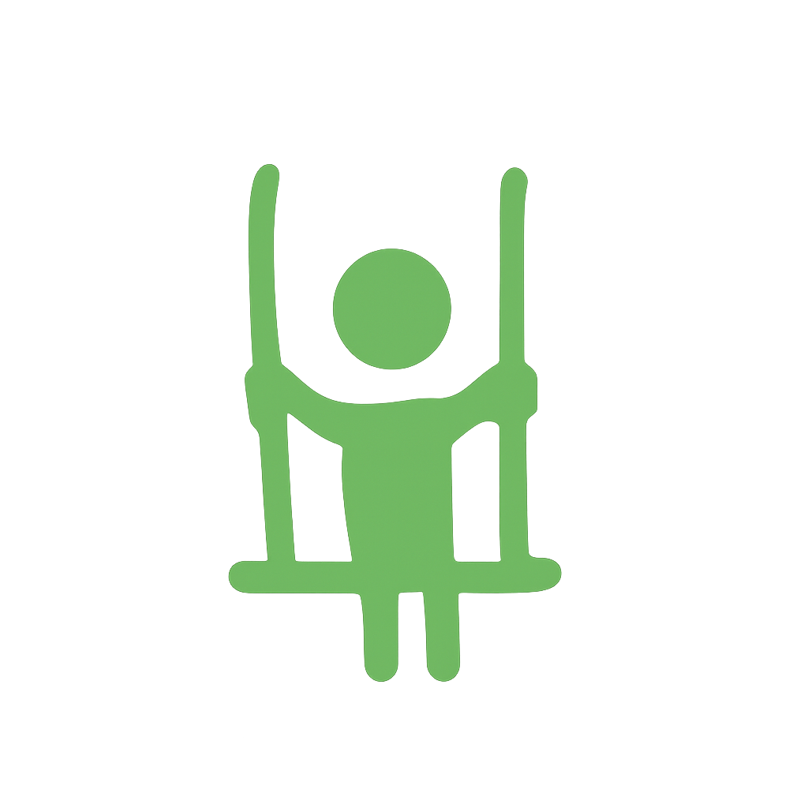
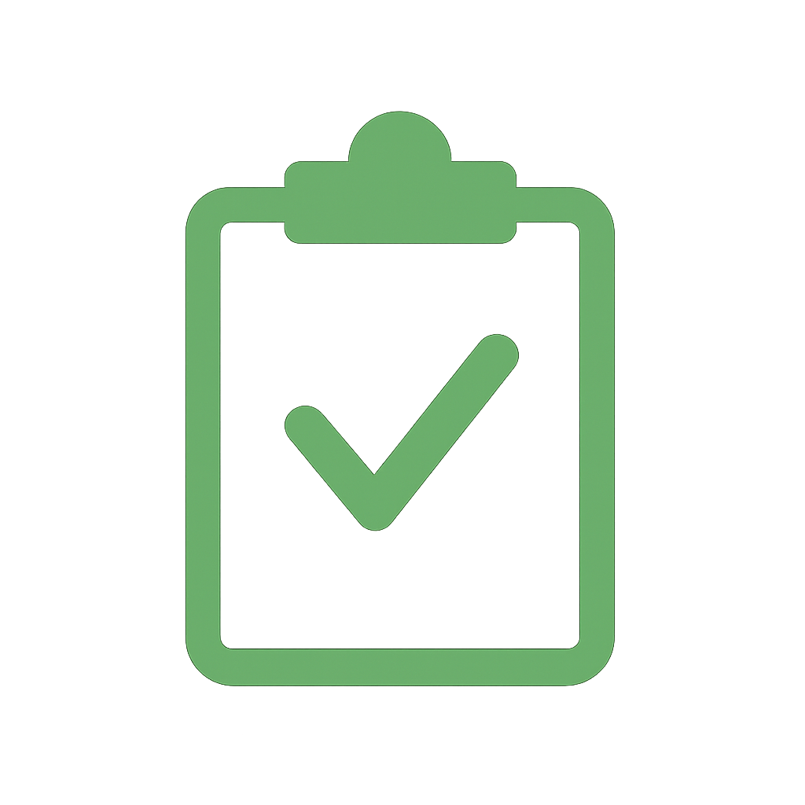
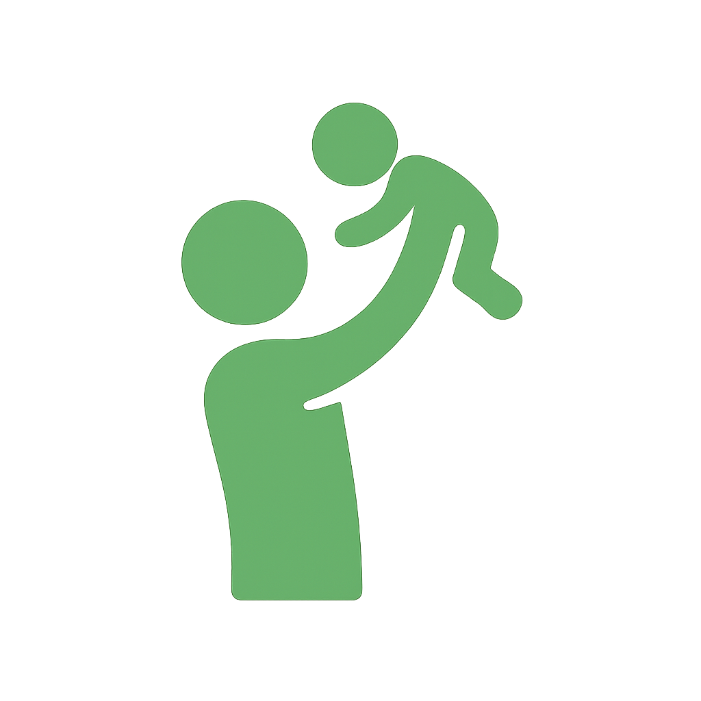

Nehezen tartja a figyelmét
Gyakran elterelődik, nyughatatlan, impulzív, vagy nehezen tud egy helyzetben maradni.
Mozgás • játék • pszichológiai szemlélet
Játékos, mozgásos és pszichológiai szemléletű támogatást kínálunk óvodás és kisiskolás gyerekeknek, ha a család figyelmi, viselkedési, mozgásos, érzelmi vagy közösségi nehézségeket tapasztal.

Miben tudunk segíteni?
Sok család akkor keres támogatást, amikor a gyermek otthon, óvodában vagy iskolában másképp működik, mint amit a környezete várna. Segítünk megérteni, mi állhat a viselkedés mögött, és milyen játékos, mozgásos folyamat támogathatja a gyermeket.
Gyakran elterelődik, nyughatatlan, impulzív, vagy nehezen tud egy helyzetben maradni.
Gyakoriak az indulati kitörések, a szorongás, a visszahúzódás vagy a nehéz megnyugvás.
Konfliktusok, beilleszkedési nehézségek, félénkség vagy túlzott vehemencia jelenik meg.
Ügyetlenség, túlzott mozgáskeresés, bátortalanság, hangokra vagy érintésre adott erős reakciók.
Hogyan dolgozunk?
A foglalkozásokon a gyerekek mozgáson, érzékelésen, kapcsolódáson és játékon keresztül mutatják meg, hogyan működnek. A pszichológusi jelenlét segít abban, hogy a játékban megjelenő nehézségek érthetővé, megtarthatóvá és fejleszthetővé váljanak.
A szülőkkel közösen gondolkodunk: az első konzultáció, a gyermek megismerése és a későbbi visszajelzések együtt adnak támpontot a család mindennapjaihoz.
Módszereink

Játékos mozgásos térben támogatjuk az idegrendszeri érést, az önszabályozást és a kapcsolódást. A folyamat lehet egyéni vagy kiscsoportos, a gyermek megismerése után közösen javaslunk formát.
Részletek a DSZIT-ről
SEED Fejlődési Skála és iskolaérettségi vizsgálat segít megérteni a gyermek erősségeit, érettségét és azokat a területeket, ahol támogatásra lehet szüksége.
Részletek a felmérésekről
Három év alatti gyermekek családjainak alvási, evési, sok sírással vagy nehéz megnyugtathatósággal kapcsolatos kérdésekben.
Részletek a konzultációrólHogyan indul a folyamat?
Írja meg röviden a megkeresés okát és a telefonos elérhetőségét.
Megismerjük a gyermek fejlődéstörténetét, a család kérdéseit és tapasztalatait.
Játékos, biztonságos helyzetben figyeljük meg, hogyan kapcsolódik és működik.
Átbeszéljük, milyen forma segítheti legjobban: csoport, egyéni folyamat vagy felmérés.
Szakembereink

Tanácsadó szakpszichológus, integrált szülő-csecsemő / kisgyermek konzulens
Szemléletében a gyermekek játékos, mozgásos és kapcsolati folyamatai egyszerre kapnak figyelmet, a szülőkkel közös megértésre építve.

Pedagógiai szakpszichológus, DSZIT-terapeuta
A gyermekek természetes kibontakozását játékos kihívásokon, mozgáson és a szülőknek adható támpontokon keresztül támogatja.
Tudnivalók és árak
90 perc
22 000 Ft50 perc, 2-5 fő
8 000 Ft / fő50 perc
15 000 Ft60 vagy 90 perc
18 000 Ft-tólA találkozáshoz előzetes egyeztetés szükséges. Írásos szakvéleményt csak több találkozást követően tudunk felelősen kiállítani.
Gyakori kérdések
Nem. Akkor is kereshetnek bennünket, ha még csak kérdéseik, megfigyeléseik vannak a gyermek működésével kapcsolatban.
DSZIT szemléletű, pszichológus által vezetett játékos-mozgásos folyamat, amely a gyermek idegrendszeri, érzelmi és kapcsolati működését együtt figyeli.
Erről az első szülőkonzultáció és a gyermekkel való találkozás után teszünk javaslatot.
Ha a család visszatérő figyelmi, mozgásos, viselkedési, érzelmi vagy közösségi nehézségeket tapasztal, és szeretne ezekre szakmai rálátást kapni.
Jelentkezés első konzultációra
A munkánk jellege miatt e-mailen tud bejelentkezni, mert a foglalkozások közben nem tudjuk felvenni a telefont. Kérjük, fogalmazza meg röviden a megkeresés okát, és írja meg telefonszámát a további egyeztetéshez.